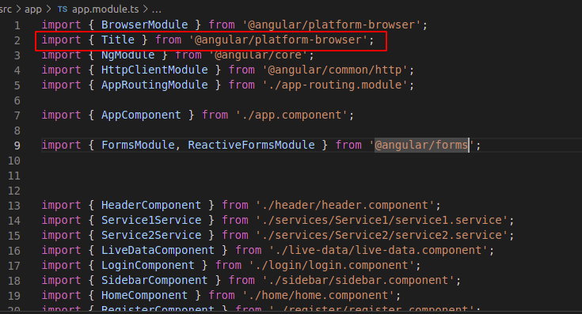
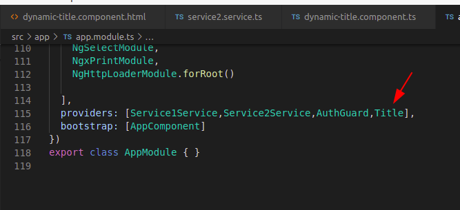
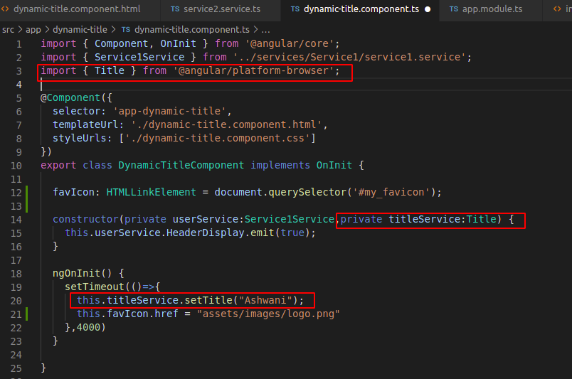
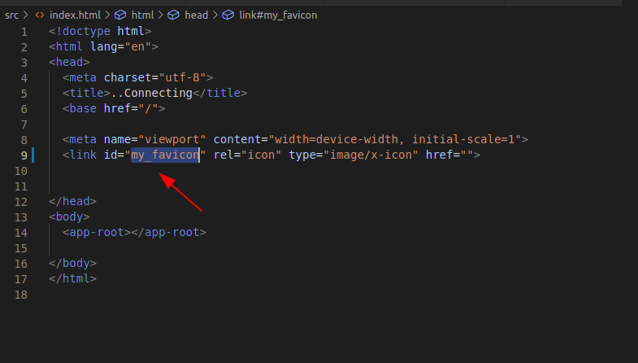
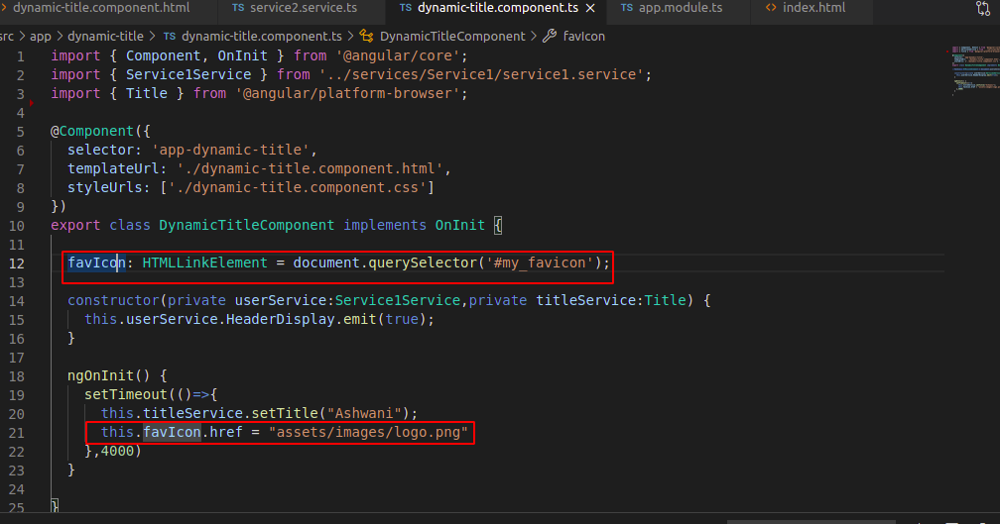

We need dynamic Title when backend decides the application's title.
Step 1: set a static title in index.html as usual.
Step 2: Now we will use a pre define title service which is provided by angular.
A: Update your app.module.ts file and import title service from "@angular/platform-browser" and set it to provider array also.


For more detail check app.module.ts file.
B: Now update your .ts file in which you are getting dynamic title from backend. Import title service here too and then make a depencey injection in constructor also. and for next step check this page's ts file.

Dynamic Favicon
We need dynamic Favicon when backend decides the application's Favicon.
Step 1: set a static Favicon in index.html as usual. and set id to it
like this

Step 2: Now move on your working ts file and make a variable and set value to it like this
